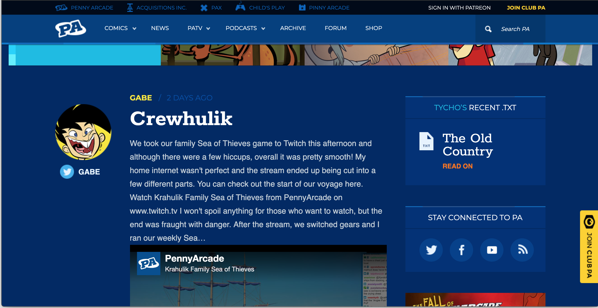

Introduction
Penny Arcade is a content creation website founded by Jerry Holkins and Mike Krahulik. Although originally based on a weekly three panel webcomic, the organization (and its associated website) have expanded to include a wide range of content. The website hosts the original web comic, several other related comics, podcasts, and at least one video series. The website, found at https://www.penny-arcade.com/, is the front page for all of this content and is the subject of this usability analysis.
The front page of the Penny Arcade website, including the top navigation bar and associated links.The website alternates between a few color palletes, mostly based on dark blues, oranges, and whites. In most cases, the contrast appears to work: the main body text of the page is white on a dark blue background. However, there are several examples in which low-contrast colors are used to display text. Consider the image below, which features a post from the website. The title and text of the post is white on dark blue (#002966). The author's name appears in a light blue (##04bbe4), although it should be pointed out that different authors have different colors. The date of the post, however, appears in a dark blue (#004ba6) that is only slightly lighter than the background. Although the colors form a coherent array for branding reasons, they don't necessarily work for readability.
A closeup of a "post" on the front page, showing poor color contrast.Although the dark blue on darker blue presents a contrast issue, it is not the only color combination of concern. Several of the areas of the page feature white text on an orange background (#FF7600), a combination that corresponds to a contrast ratio of 2.67:1. This is far below the WCAG 2 Contrast requirement of 4.5:1.
The Navigation Bar and Site Navigation
The navigation for this page primarily as a navigation bar across the top of the page. The main content types here are: Comics; News; PATV; Podcasts; Archive; Forum; and Shop. There is also a search box to the right which allows the user to search for specific text. Several of the navigation items feature a drop-down menu, providing a sort of organizational heirarchy for the website. For example, under Comics links can be found to "the original" Penny Arcade strip, The Trenches, Camp Weedonwantcha, PA Side Stories, and PA Presents. There is also a thin menu of options above the navigation bar, although all of these lead to other sites within the Penny Arcade organization.
 The navigation bar, "stuck" to the top of the browser window.The entire navigation menu is sticky insomuch that sticks to the top of the web browser once the user scrolls past the banner ad at the top of the page. This means that no matter how far down the page a user goes, they always have the ability to navigate throughout the website. However, it is worth emphasizing that any link that goes to another "site" within the Penny Arcade organization does not feature any of the same navigation and it is easy to get confused. For example, three of the links under the comics navigation menu item lead to pages within the Penny Arcade website: the first (from the left) and the last two (on the right). The second and third link actually lead to external websites. This is confusing to navigate because nothing makes it clear that the user will be redirected to an external site until it happens.
Perhaps the most bizarre navigation feature on the page is the navigation link labelled archive. Unlike other conventional archives, this link actually goes to a list of keywords. Instead of providing any meaningful organization, the "archive" is just a large list of popular keywords. Given the search box in the navigation bar, one could presume that this archive is not a popular destination on the page.
With a search bar, this sort of archive is of questionable utility.The website does not use any sort of system to make it clear what the user is currently viewing or where in the site's organization that page exists. In some cases, this actually makes for rather confusing navigation. For example, there is a link under the PATV navigation menu item that takes the user to a page featuring a series of twelve videos from the Acquisitions Incorporated video series. There is also a link under the PODCASTS navigation menu item that takes the user to a page featuring a series of podcast episodes from the Acquisition Incorporated podcast series. Although these are both separate pages on the website, the content are related: the first twelve podcast episodes presented are the audio track from the twelve videos featured in the video page. It's actually a confusing distinction that likely highlights issues with the way the website has divided and organized content.
Conclusions
The Penny Arcade website represents one of those kinds of sites that feels really sharp and impressive when you first see it but that quickly becomes something less impressive the more you use it. Although the color scheme looks really good when the page first loads, some of the colors make content difficult to read. The navigation menu looks good and stays with the user, but some of the navigation takes the user off of the page without notification or links to separate pages that show the same content (but in a different way).
What this website demonstrates is that website organization should not necessarily be done in the same way as other types of organization. Having separate navigation items for videos and podcasts makes sense, except it becomes confusing when most of the content appears under both navigation items. Similarly, although it makes sense to organize all comic content under one item, that organization is suspect when two of the five items actually take the user to an external website (without notification). In all, it feels as if the Penny Arcade website suffers from a fair number of issues that are rooted in design choices made many years ago.